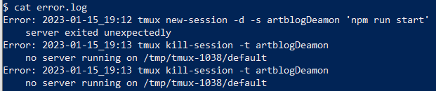

Artblog Déploiement
- POK
- 2022-2023
- temps 2
- Linux
- ssh
- deploy
- bash
- Tuncay Bilgi
- Connaissance de commandes UNIX : ssh,scp,ls,cat,touch etc...
- Accès ssh au serveur ovh1
- Avoir un projet à déployer
Dans le second sprint, on utilise des scripts bash qui nécessite une compréhension du shell assez complète.
Déploiement sur un site distant.
Le but du POK est d'appréhender le déploiement de projets sur un serveur. Ici, je vais spécifiquement déployer le site développé pendant le POK1 : Artblog, qui est un blog en Javascript, plus précisément, il utilise Next.js et la base de données est hébergée par un service cloud.
Remarque :
Mon back étant hébergé sur un HeadlessCMS il n'y a pas besoin de déployer la BDD, je vais donc potentiellement créer un mini projet qui contient une BDD classique juste pour me frotter au déploiement complet d'une application.
Objectifs finaux :
- Pouvoir acceder à mon site sur ovh1.
- Faire en sorte que le contenu se mette à jour sans nécessiter de redéploiement.
Gestion de Projet :
Organisation en deux sprints séparés par le point POK.
Taches Premier sprint :
- Explorer le serveur ovh1 pour voir comment marche le déploiement
- Corriger les bugs majeurs du Artblog
- Build une version du Artblog
- Deployer Artblog sur ovh1
Backlog :
- Mettre en place une fenêtre permanente.
- Bonus : Mettre en place une base de données
- Bonus : mettre en place une automatisation avec Jenkins.
Premier sprint:
Premiers pas
Le serveur est organisée de la même manière pour chaque compte. Mon compte est curcuma donc je prend cela pour exemple et je me concentre sur la partie node puisque le projet que je veut mettre en place est basé sur node.js :
_ Home |_Curcuma |_Django |_Flask |_java |_node |example.js | readme.txt
Le readme contient les addresses à questionner selon le port que l'on veut atteindre.
Dans notre cas, on vois dans le fichier example.js que l'on utilise le port 10438 et que pour communiquer à travers ce port, on doit envoyer nos requêtes à node.curcuma.ovh1.ec-m.fr.
Avec la commande node example.js on lance le programme et on met donc en place notre serveur. Sur un navigateur, node.curcuma.ovh1.ec-m.fr nous renvoie Hello World.
Mise en production du Artblog :
Mise en place du projet sur ovh1 :
Ce n'est pas une manière propre de faire sur un serveur de production car on copie tous le repo dans le serveur alors qu'il n'a besoin que de la branche main. Dans un chapitre suivant on recommence plus proprement.
Grâce à github, on va cloner le projet dans le dossier node.
Sur ovh1,on vérifie qu'il y a git :
git --version
On clone ensuite notre projet dans le dossier node. Puisque le projet est publique, il n'y a rien de spéciale à faire, sous les conseils de Joe, on utilise directement le lien https. Puisque l'on à jamais utilisé git avec des commande et que nous somme par conséquent un peu nul, on lis la documentation avec git --help et on trouve ce qui nous intéresse git clone et git help clone pour toujours plus de documentation.
On clone :
git clone https://github.com/TuncayBilgi/artblog.git
Cela créer un dossier Artblog avec tous les fichiers nécessaires dedans, sauf certains que je n'ai pas mis dans le git comme mes fichiers d'environnement qui possèdent les clés d'API.
Ensuite, on exécute les commandes nécessaires à installer le reste des fichiers :
npm install
Je copie-colle mon fichier d'environment :
scp ./.env curcuma@ovh1.ec-m.fr/node
Test de la mise en production sur mon ordinateur :
Avec Next.js, certaines commandes servent à la mise en production :
npm run dev // Lance le projet en mode développement en local npm run build // build le projet npm run start -p PORT //lance le serveur de production sur le port indiqué
On lance le build, après un certain temps il semble que tout marche, on peut alors essayer de lancer l'application sur un port différent que le port par défaut (3000) car on aura besoin de le faire sur ovh1.
Changement de port :
Le serveur ovh1 nous octroie un port bien précis pour y mettre notre application. On ne peut donc pas lancer le programme sur n'importe quel port et sûrement pas le port par défaut. Pour le changer, cela dépend de la technologie utilisée. Avec un serveur node tout simple, il suffit de modifier le port dans le fichier js qui lance le processus. Pour nous, d'après la documentation, nous devon modifier la commande npm run start. Cela ce fait dans le fichier package.json où l'on rentre :
"start": "next start -p 8080"
Ce qui devrait lancer l'application sur le port 8080.
Pour lancer sur un autre port, on va d'abord vérifier qu'il est libre. Par exemple, on active le port 3000 avec npm run start et en lançant cette commande dans le Powershell : Get-NetTCPConnection | where Localport -eq 3000 | select Localport,OwningProcess, on voit qu'un processus écoute le port 3000. Si le port n'est pas écouté, rien ne s'affiche.
On vérifie que le port 8080 est libre puis on lance l'application sur ce port.
npm run start Get-NetTCPConnection | where Localport -eq 8080 | select Localport,OwningProcess
La dernière commande renvoie :
Localport OwningProcess
8080 17516
C'est prometteur. On passe sur le port 10438 qui sera utilisé sur ovh1.
Faire du git proprement:
Comme précisé précédemment, on a copié l’entièreté du repo dans le serveur de production. On oublie et on refait. On commence par supprimer l'ancien dossier. Je ne sais pas si il y a une bonne manière de le faire et je n'ai pas regardé. Ici, je supprime le dossier et tout ce qu'il y avait dedans, ce qui peut être dangereux.
Si vous aviez des fichiers importants, tout va sauter, vérifiez 2 fois avant de lancer des commandes qui commencent par rm -r
// Dans ovh1 [...]/node rm -r artblog/
Ensuite, on pull proprement le projet :
git init git remote add origin https://github.com/TuncayBilgi/artblog.git git pull origin main
Ici, seul la branche main est clonée sur le serveur. Il suffit de replacer le fichier .env et on peut potentiellement tester le site. Pou mettre le repo à jour sur le serveur il suffit de :
git fetch origin main git reset --hard origin/main git clean -fdx // attention cela surprime tous les fichiers non présent dans la branche, notamment le fichier .env si il existe, cette commande est optionnelle
Ou plus simplement :
git pull origin master
Letsgo on test enfin :
Tous les préparatifs sont faits, il ne reste qu'à build l'application sur le serveur, puis la lancer :
npm run build npm run start
Ne lancez pas d'applications en mode dev sur le serveur de production, et de manière générale, faites attention aux ports que vous allez utiliser.
L'application est disponible sur internet à l'adresse node.curcuma.ovh1.ec-m.fr et tout marche correctement.
Problème, quand on ferme le terminale, l'application s'arrête.
Lancer l'application de façon permanente :
En effet, exit le terminal tue tous les processus sur ovh1 qui ont été lancés depuis notre propre terminale. Ce n'est pas ce qu'on veut car ça signifie qu'on ne peut pas éteindre notre ordinateur sans que ça coupe l'application.
Il faut donc créer un terminale sur le serveur ovh1 qui ne s'éteigne pas quand on éteint celui de notre ordinateur. Sous les conseils de M.Brucker, on utilise simplement la commande screen qui permet de lancer des terminaux et des processus en tâche de fond.
screen -S artblog // Nous emmène dans un nouveau terminale. npm run start // on tape Ctrl-A + D pour quitter le terminale
Et voila l'application tourne de façon permanente sur ovh1.
Bilan premier sprint :
J'ai réalisé le travail que j'avais prévu de faire car j'ai eu la chance de ne rencontrer aucun problème. J'ai cependant été un peu léger sur la correction de bugs du site mais ça n'était pas la priorité et j'ai amplement le temps durant le second sprint.
Pour le second sprint :
Je compte mettre de vrais articles sur le artblog pour que le site soit intéressant à visiter. De plus, je vais tenter de mettre en place une automatisation CI/CD qui permet de pull la dernière version stable sur ovh1 puis de build automatiquement.
Second Sprint :
On va se faciliter la vie en écrivant un script qui va mettre à jour, sur ovh1, le site, en allant chercher la dernière version de artblog et en l'activant, ensuite on pourra lancer ce script depuis un pc distant via ssh. Dans cette partie, on utilise git en ligne de commande.
Git CLI :
On commence par mettre à jour notre projet :
git add . // on ajoute les changements au commit git commit // on commit les changements git push // on les envoies à l'origine git checkout main // on va sur la branche main git merge dev // on y fusionne la banche dev
Création du script :
La première version sera toute basique, on y inclut ces quelques commandes pour tester :
#!/bin/sh
cd /home/curcuma/node/artblog
git pull origin main npm install npm run build npm run start
echo "Prod successfully started"
A ce stade, le script va chercher la dernière version du artblog sur github, installe les dépendances du projet, le build et lance le serveur sur mon port.
Ce script a de nombreux problèmes :
- Il echo "Prod etc.." peu importe de l'état d’exécution.
- Il ne sauvegarde pas les erreurs.
- Il n'y a aucun test d'effectué.
- Il lance le serveur de prod dans un terminal local, on va le détacher avec screen (puis tmux).
- On ne peut que lancer tout le script d'un coup, le script n'est pas optimal si il faut juste redémarrer le serveur.
- Il n'est pas possible de voir simplement comment ce que fait le script.
Envoie du script :
On copy ce script sur le serveur avec scp :
scp /chemin/local/publish.sh utilisteur@serveur:/chemin/distant
Cette commande doit être lancée à chaque modifications.
On essaie maintenant d'executer le script via ssh :
ssh nom_d_utilisateur@nom_du_serveur "bash /chemin/distant/publish.sh"
On a un echo : prod succelfully started, ça s'annonce bien. Quelques erreurs de script plus tard, j'ai une version qui fait ce que je demande. On essaie maintenant d'améliorer le système point par point.
Creation d'un script pour lancer le script :
A ce stade, je ne pense pas que ça soit une bonne idée d'essayer de tout lancer sans voir ce qu'il se passe
Pas forcément utile mais un tout petit script permettrais de mettre à jour le script serveur puis de le lancer dans la foulée. Je ne le fais pas car je préfère voir si il y a des erreurs, mais il ressemblerait tout simplement à cela :
Prepare_prod :
scp publish.sh [...] ssh [...] /publish.sh
Détachement du server dans un terminal en daemon :
on modifie le script :
screen -S artblog -dmS npm run start
Cette commande devrait lancer le serveur dans un processus deamon nommé artblog, qui sera toujours en route quand je rompt la liaison ssh.
Problème : la commande screen -list ne référence pas le processus, je ne peux plus arrêter mon serveur. C'est embêtant car impossible de lancer une nouvelle version du serveur si le port est déjà utilisé.
Debug mode :
On essaie de trouver le problème, pour commencer, le serveur est bien disponible sur node.curcuma.ovh1, ce qui veut dire que le screen à bien fonctionné.
On trouve le processus qui écoute sur mon port 10438 avec :
ps -ef | grep artblog | awk '{print $2}' // cette commande liste les processus, ne garde que ceux qui s’appellent artblog et print l'id du process. on reçoit 304108
On kill le processus:
kill 34108
Cela à marché.
On l'inclut dans le script : d'abord on kill l'ancien process, ensuite on pourra en recréer un :
ps -ef | grep artblog |head -n -1 | awk '{print $2}' | xargs kill -15
La commande se complique :
- ps -ef : d'abord je récupère les processus
- grep artblog : je prend ceux qui contiennent le mot artblog
- head -n -1 | : je garde tous sauf la dernière ligne, en effet la dernière ligne est la commande grep elle même et renvoie une erreur par la suite
- awk : je ne print que la deuxième colonne qui correspond au PID
- kill : je kill tous les process listés par le print awk.
Retour au script :
Le script devient :
#!/bin/sh
cd /home/curcuma/node/artblog
git pull origin main
npm install
npm run build
ps -ef | grep artblog | awk '{print $2}' | xargs kill -15
screen -S artblog -dmS npm run start
echo "Script ended"On l’envoie et on test.
Séparer le build du projet du lancement du serveur :
On crée des options qui permettent ou non de build le serveur.
On crée l'option -h qui affiche de l'aide et -b qui lance le build. Par défaut, on lance un screen.
#!/bin/sh
function Build() {
echo "Pulling from origin..."
git pull origin main
echo "Installing dependancies..."
npm install
echo "Building ..."
npm run build
}
while getopts ":hb" opt; do
case $opt in
h)
echo "This is the help section of the script test.sh"
echo "Available options are:"
echo "-h : display this help section"
echo "-b : run the Build function"
exit 0
;;
b)
Build
exit 0
;;
\?)
echo "Invalid option: -$OPTARG" >&2
exit 1
;;
esac
done
cd /home/curcuma/node/artblog
ps -ef | grep artblog | head -n -1 | awk '{print $2}' | xargs kill -15
screen -S artblog -dmS npm run start
echo "Script ended"
Mais à cause de je ne sais quoi le screen ne marche pas a travers ssh. On essaie la même chose en utilisant tmux au lieu de screen.
On remplace les lignes liées a screen part
tmux kill-session -t artblogDeamon
tmux new-session -d -s artblogDeamon "npm run start"
Et cela fonctionne !
On peut maintenant lancer publish.sh en ssh pour
- afficher l'aide grâce à -h
- pull la version la plus récente sur git et build le projet grâce à -b
- et publier le serveur.
Tout cela avec par exemple ssh curcuma@ovh1.ec-m.fr "bash ./node/artblog/publish.sh -h"
Récupértions des erreurs :
On part sur du Bash un peu plus poussé que juste des echo et des commandes git.
Pour être un peu sérieux, on ajoute au script une fonction qui récupère les erreurs à chaque commande lancée. Ces erreurs seront casées dans un fichier de log. On formate les erreurs pour qu'elles affichent la date, la commande lancée avec ses options, et ensuite on print l'erreur.
Pour cela, on utilise des spécificités bien pratique de bash comme les stderr, le pipe, les $?, les variables d’environnements etc...
Error_Handler() {
command=$1 # 1)
log_file=$PWD/error.log # 2)
stderr=$($command 2>&1 >/dev/null) # 3)
if [ $? -ne 0 ]; then # 4)
echo "Error: $(date +%F_%R) $command " >> $log_file
echo " $stderr" >> $log_file
echo "$stderr" # 5)
fi
}La fonction est compliquée et on y arrive après plusieurs itérations.
Explication détaillée :
-
- On prend une commande en paramètre
-
- on choisi le fichier error.log dans lequel on va placer nos log d'erreurs
-
- on créer une variable stderr qui contient l'erreur standard de la commande. Pour cela, on lance la commande et on redirige l'erreur dans le stdout et on envoi ce stdout dans /dev/null pour qu'il ne soit pas affiché dans le terminal
-
- Si la commande à terminé avec un exit code != 0, on sait qu'il y a une erreur, on va donc former un message d'erreur à mettre dans le fichier log
-
- Ce message d'erreur contient 2 lignes, une avec la date formatée et la commande, l'autre avec la stderr récupérée plutôt. Enfin, on echo dans le terminal utilisé la stderr pour avoir l'erreur sans aller fouillé le fichier de logs
On peut maintenant 'wrapper' toutes nos fonctions avec cette Error_Handler pour que toutes les commandes me donnent des logs en cas d'erreur.
Problème de wrap :
La commande du tmux agit mal quand elle est placée dans Error_Handler. Je suspecte que ça à un lien avec le fait qu'il y ait 3 fonctions imbriqués. Je recopie juste la fonction Error_handler directement autour du tmux. Cela à l'avantage de marcher, mais l'inconvénient de baisser la qualitée de mon code. En effet il y a de la recopie et si je veux modifier le nom du fichier de logs par exemple, je dois le faire 2 fois maintenant.
Avec ce genre de fonction, et surtout en bash, il faut faire attention. $command désigne la variable alors que $($command) l’exécute. La syntax est crucial, surtout dans ce genre de script ou il est crucial de ne lancer la commande qu'une fois, et non pas plusieurs. Ici, le script lance la commande une unique fois, c'est ce qu'on veut.
De plus, on conditionne le tmux-kill pour qu'il ne se lance que si il n'y a pas de session artblog déjà présente. Cela permet de ne lancer la commande que si nécessaire puis ça permet d'éviter d'ajouter des logs inutiles dans error.log à chaque fois que la fonction est exécutée.
le script devient :
#!/bin/sh
function Error_Handler() {
command=$1
log_file=$PWD/error.log
stderr=$($command 2>&1 >/dev/null)
if [ $? -ne 0 ]; then
echo "Error: $(date +%F_%R) $command" >> $log_file
echo " $stderr" >> $log_file
echo "$stderr"
fi
}
function Build() {
echo "Pulling from origin..."
Error_Handler "git pull origin main"
echo "Installing dependancies..."
Error_Handler "npm install"
echo "Building ..."
Error_Handler "npm run build"
}
while getopts ":hb" opt; do
case $opt in
h)
echo "This is the help section of the script test.sh"
echo "Available options are:"
echo "-h : display this help section"
echo "-b : pull the main branch of the project, build the project and publish it on internet"
echo "no options will only publish the project"
exit 0
;;
b)
Build
;;
\?)
echo "Invalid option: -$OPTARG" >&2
exit 1
;;
esac
done
cd /home/curcuma/node/artblog
session_status=$(tmux list-sessions | grep artblogDeamon)
if [[ $session_status =~ "artblogDeamon" ]]; then
Error_Handler "tmux kill-session -t artblogDeamon"
fi
stderrTmux=$(tmux new-session -d -s artblogDeamon "npm run start" 2>&1 >/dev/null)
if [ $? -ne 0 ]; then
echo "Error: $(date +%F_%R) tmux new-session -d -s artblogDeamon \"npm run start\" " >> $PWD/error.log
echo " $stderrTmux" >> $PWD/error.log
echo "$stderrTmux"
fi
echo "Script succesfuly ended"
exit 0
Le script fonctionne come voulue, voici un exemple de logs que l'on récupère si il y a des erreurs :
Pour aller plus loin, on peut automatiser le lancement de se script, suivant certaines conditions, avec Jenkins par exemple, comme dans ce MON
Bilan second sprint :
Je suis partie dans une direction différente que prévu. Dans une démarche DevOps, la mise en production est un 'non événement', c'est à dire qu'il doit se faire facilement, rapidement, et aussi souvent que nécessaire. Grâce à ce petit script, on se rapproche de cette démarche. Je n'ai cependant pas eu le temps de remplir mon site de vrai articles.